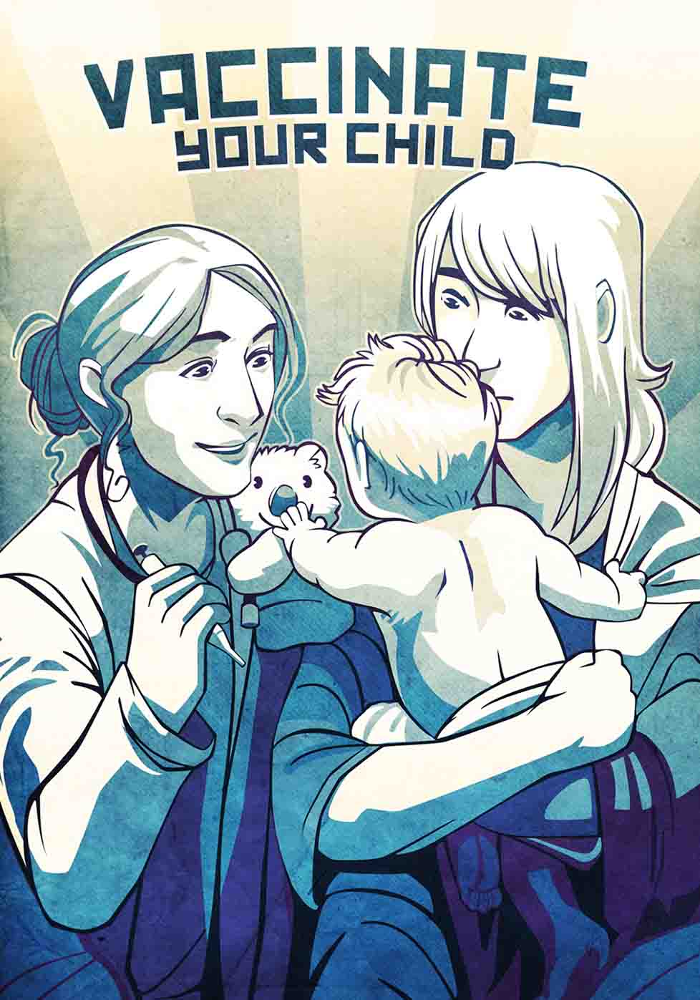

Vaccines produce immunity from serious diseases. They are well designed and rigorously tested in scientific studies, and they protect the health of you, your child, and the community.
Follow the recommended schedule of vaccines, which starts for babies at 6 months old, and save your child from diseases that once injured or killed thousands of children. Polio, once the most feared disease in America, has been eliminated because of vaccines.
Vaccines, especially injected ones, may cause some discomfort and even pain at the site. Your child may fuss and complain. This is normal and can be soothed.
Discomfort from the vaccine is minimal compared to the pain, trauma, and even death that the disease itself could cause. Without the measles vaccine, one of the most effective available, your child has a 90% chance of contracting it from an infected person.
Talk to your trusted pediatrician or nurse practitioner and read valid information sources to understand vaccine technology and its place in human health.
Keep your child on schedule for the series of vaccines recommended from birth through the teenage years.
